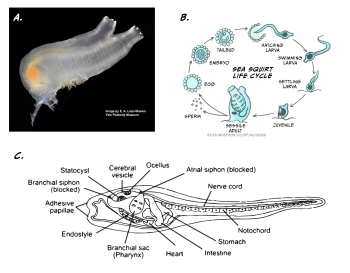
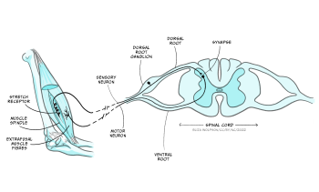
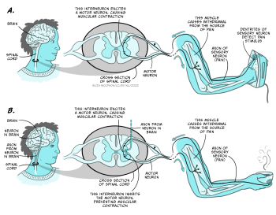
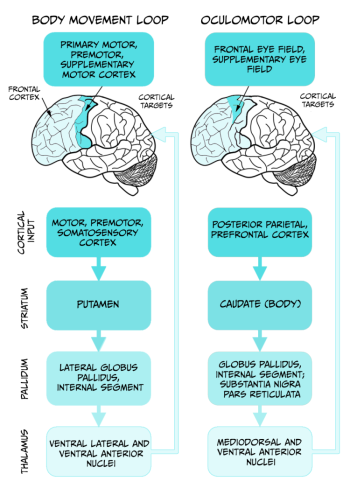
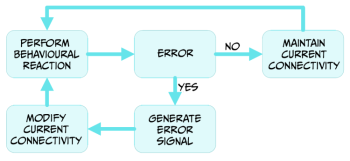

Sensorimotor integration
Learning Objectives
After reading this chapter you will be able to understand:
- the different levels of sensorimotor integration
- the involvement of different brain systems in preparing, executing and evaluating a behavioural action based on external and internal sensory information.
Animals are the only branch of living organisms that have brains and almost all of them do. (Note: There are a few exceptions. Sponges are simple animals that survive on the sea floor by taking nutrients into their porous bodies, and they have no brain or nervous tissue of any kind.) Current theories suggest that one of the main advantages of having a brain is to allow its carrier to move around and interact with the environment. Let’s analyse an illustrative example: the sea squirt, a marine invertebrate animal, which has a very peculiar cycle of life (Figure 5.16).
In its juvenile form, the sea squirt swims around, looking for a suitable rock on which to attach itself. To do so, it uses a rudimentary central nervous system of around 200 neurons. Once attached, the animal becomes sessile (immobile), and eats its brain, a rich source of energy. For the rest of its life the sea squirt will remain immobile, so there is no longer any need for a brain. This fascinating example offers a strong support for the necessity of brains to generate adaptive behaviour by coordinating sensory information into motor action.

In this chapter, we will explore how brains produce adaptive behaviour by acquiring information from the environment through the senses. We will start by analysing the simplest sensorimotor integration mechanism, the spinal monosynaptic reflex, and escalate in complexity all the way to explain the generation of a complex behaviour such as hitting a tennis ball with a racquet during a match.
Intuitively, becoming a World Chess Champion is a much more complicated task than moving a pawn one square forward in a chess game. Reality suggests otherwise. We humans have been able to build, after a lot of effort and investment, a computer that is capable of consistently winning chess games against human World Champions. Nevertheless, we are still at the infancy of designing and building machines that have the manual dexterity of a small child when picking up a pawn and gently moving it one square forward. How is this possible?
In the game of chess there are a finite number of rules and movement possibilities, all of which are known to us. So, programming a computer that had sufficient computing power to calculate all movement possibilities and outcomes during a chess game was simply a technical challenge: considerable, but feasible. In 1997, an IBM computer called Deep Blue was the first machine capable of defeating the best human chess player of the time, the World Chess Champion Gary Kasparov. This was certainly an outstanding achievement, but Deep Blue was not physically moving the chess pieces but instead deciding on the next move given the current state of play. A human helper was required to physically move the pieces following the computer instruction.
Robots that can do physical actions mimicking humans are much more complicated to build and program than Deep Blue. Building and programming a robotic arm that can uncap a water bottle and pour a glass of water takes considerable amounts of money and the brains of lots of intelligent engineers. But the same robotic arm is unable to do other simple tasks for humans, such as tying shoelaces or breaking an egg to prepare a meal. Why is this the case?
Probably because robot designers are still not able to incorporate most of the fundamental rules that the nervous system uses to coordinate such tasks, based on real-time integration and analysis of noisy and multi-dimensional sensory information. In the following sections we will revise what is known about the basic principles ruling the sensorimotor integration, focusing on how and where sensory information is computed by the brain to produce adaptive and flexible behavioural outputs.
Sensorimotor integration: the minimal unit
One of the simplest structures to produce sensorimotor integration in humans is the monosynaptic spinal reflex (Figure 5.17).

These reflex arches comprise one sensory neuron, originating in a target muscle, and one motor neuron, originating in the spinal cord and making a synaptic contact with the same target muscle. The sensory neuron collects information about the stretch status of the muscle fibres via stretch sensitive sensory terminals. When the muscle stretches beyond a certain threshold the sensory neuron is activated, firing action potentials that travel to its axon terminal. The sensory neuron releases neurotransmitters that activate the motor neuron, which in turn fires action potentials that travel to its axon terminal located in the target muscle. Activation of the motor neuron axon releases the neurotransmitter acetylcholine (ACh), which, via ACh receptor channels, results in muscular fibre contraction. This very simple circuit is an example of sensorimotor integration. In this case, the sensory information is rather simple: the sensory neuron is activated or not, depending on the muscle stretch surpassing the predetermined threshold. Also, the outcome is all or none: either the motor neuron fires action potentials, and contracts the target muscle, or not. This very simple sensorimotor integration system serves a very specific function of preventing overstretching of the target muscle, which can damage permanently the muscle fibres. The behavioural outcome is also simple, producing a muscle contraction to prevent injury, but well-suited for its biological function.
Since we claimed above that the reason for having a brain is to produce behaviours such as swimming or looking for a suitable place to attach, you may be puzzled by the fact that spinal reflexes produce behaviours without involving the brain. One explanation for this apparent discrepancy is the biological function served by these reflexes. This becomes clear in the following home-based experiment on the knee patellar reflex in humans from Backyard Brains.
Applying a gentle hit to the patellar tendon (connecting the quadriceps muscle with the tibia) of a human volunteer, the quadriceps of the same leg contracts within 20 to 30 milliseconds. In contrast, if we instruct the volunteer (who is blindfolded so they cannot anticipate the upcoming hit to the knee) to contract the quadriceps of the other leg every time they detect the gentle hit on the target knee, the delay between the hit and the contraction increases to around 200 milliseconds. The contraction of the same leg that receives the hit is governed by a spinal reflex, whereas the contraction of the contralateral leg is controlled by the participant’s voluntary decision to move it, a decision that involves the participant’s brain activity. Given the biological function of the spinal reflexes, bypassing the brain allows for a faster response with higher chances of preserving tissue integrity.
However, most human behaviours taking place in our daily activities are a consequence of complex interactions of sensory information, internal state and response possibilities, which requires the computational power of the brain to maximise the benefits of action selection in real time in an ever-changing environment.
Behaviour in an ever-changing world
Let’s explore the following scenario. One morning, you are ironing your clothes before attending a job interview. In a split-second distraction one of your fingers touches the hot iron, and you immediately and rapidly retrieve your affected hand and arm from contact with the iron’s surface.
This everyday life example illustrates the function of another type of spinal reflex called the polysynaptic reflex. In this case, the sensory and motor neurons characteristic of the monosynaptic reflexes presented above are complemented by an interneuron making a synaptic bridge between them (Figure 5.18a).

The function of this reflex is to prevent damage to the target body part and does not recruit or require brain activity.
But let’s now imagine that after ironing your clothes, you prepare some coffee for breakfast. When you remove the recently-heated cup of coffee from the microwave you realise that you overheated the coffee, and the cup is too hot for you to handle it all the way to the table. As in the previous example, the corresponding spinal reflex will be activated by the heat to prevent damage to your hand, but you do not drop the hot cup. Instead, you look for a nearby surface on which to place the cup down without spilling its precious contents.
If your brain were not involved in this scenario you would end up with a broken cup of coffee scattered all over the floor, but instead you managed to find a better solution and saved your hand and the coffee. This is an example of sensorimotor integration where action selection by the brain is key to produce an adaptive behavioural response. The polysynaptic spinal reflex that saved your hand from the hot iron needed to be inhibited in this case, and this was possible by the activation of additional interneurons descending from the brain (Figure 5.18b).
Your intention of drinking that coffee, and a plausible prediction of contacting a hot object when you were reaching for the cup inside the microwave, influenced your action selection and overrode the polysynaptic spinal reflex that was sensory-activated. This example illustrates why the brain is essential for this type of behavioural selection, since it can integrate sensory information from different sources, along with the internal state of the subject, to produce a more accurate and advantageous action at the right moment and time.
Neural pathways and structures involved in voluntary actions
Up until now we have revised how reflexes can control actions, and how the integration of multiple sources of information can alter predetermined reflex actions to produce more adaptive behaviours. Nevertheless, most of our daily actions and behaviours are produced voluntarily, without an apparent involvement of mono or polysynaptic reflexes. Seemingly trivial movements like hitting a tennis ball with a racquet require a complex integration of sensory perception and analysis of internal state, including posture and muscle status, action selection and execution. Such a complex task is entirely up to the brain and involves detecting the looming ball through visual and auditory information, estimating the ball speed and area of bounce, approaching the target area and preparing the strike, and finally striking the ball with the centre of the racquet.
In this section we will revise the sensory and neural pathways, and body structures, necessary to produce such voluntary action. You have heard about many of these in previous chapters into sensory and motor pathways, but here we will consider in more detail how they work together to generate behaviour. We will also discuss some of the basic principles that the brain uses to produce the best possible solution for the problem, hitting the tennis ball back to the other side of the tennis court, as well as how the consequences of our actions can sculpt more refined sensorimotor integration processes, producing better actions.
Tracking the ball: audition and vision in action
If you ever played a tennis match, you may recognise that there are two main sources of information when we are trying to track a looming tennis ball. Clearly, this task is mainly solved by the visual system, but the auditory system also plays a part.
For more experienced players, the sound of the ball being hit by the opponent is an early indication of the rough course the ball might follow. If the sound volume is very low or high, the probabilities of the ball not hitting the permitted section of are our side of the court are high. Also, the quality or frequency of the sound may also indicate if the ball may be worth tracking and preparing to return it. In those cases, we might even decide the ball is not worth tracking at all and we prepare for the next point. As discussed in the chapter Percibir el sonido: el sentido de la audición, both the volume and pitch of auditory stimulus are perceived in our inner ear by the structure called the cochlea.
Inner hair cells distributed along the basilar membrane can detect specific sound frequencies and codify the intensity of such frequencies by their action potential firing rate. The auditory information is translated into the language of the nervous system, action potentials, and it reaches the brain via the auditory nerve. Based on previous experience, the brain may be able to determine when the volume and pitch of a sound from the ball being hit by the opponent is more likely associated with a ball missing the target area of the court. In those cases, the motor command activated by the brain will be to prepare for the next point rather than tracking and striking the ball. But, if the sound is about right, then the visual system and a more complex sensorimotor integration mechanism takes place.
The eye is responsible for translating visual information into action potentials. The moving tennis ball travelling at speed towards our side of the court constitutes a looming object that occupies gradually more space on the retina surface. Both eyes will detect the ball, and the visual information will be integrated in the brain to estimate not only the direction of the ball but also its speed. As the ball moves towards the near side of the court, the eyes will move aiming to maintain the object in focus within the fovea. Keeping the image of the ball within the fovea will give the player the best visual resolution in daylight, maximising the capacity to detect the ball as it travels in a luminous environment. Photons bouncing on the tennis ball that arrive to the fovea will excite a collection of photoreceptors. These specialised cells will translate the visual information into electrical information via the activation of the photopigment and specific ion channels. Changes in the photoreceptor membrane potential lead to activation of the bipolar and ganglion cells, which convey the visual information, now converted into action potentials, to the brain.
The visual information arriving at the brain will play different roles in different motor outputs during action selection and execution. Early visual processing will be required for tracking the moving ball. Empirical research has determined which are the neural pathways involved in object tracking, and how this information is used to produce motor commands for eye movement. Rapid eye movements, called saccades, are used to track the ball and acquire information about the environment. This will be particularly important as we start approaching the area where the ball may bounce, since we not only require keeping an eye on the ball, but also moving safely and effectively within the court.
In the laboratory, visual attention of healthy volunteers can be traced by tracking the position of the eyes in real time. Using electroencephalography or brain imaging techniques in combination with eye tracking, we have learnt that saccades are mainly controlled by the oculomotor loop involving the cerebral cortex, the basal ganglia, and the thalamus (Figure 5.19).

Neurons in the posterior parietal cortex, an associative region that receives visual and motor information, increase their firing rate just before a saccade is observed. Lesions affecting this region destroy the capacity to perform saccades and produce a condition called ‘spatial neglect’ in humans, characterised by attentional deficit in the visual field contralateral to the injured brain hemisphere.
The posterior parietal cortex sends connections to several nuclei of the basal ganglia controlling eye movements. One of these nuclei, the superior colliculus, contains visual fixation neurons. These cells are activated immediately after a saccade takes place, and keep firing during eye fixation, inhibiting eye movement away from the target location.
Hence, the concerted action of several key brain regions is responsible for tracking down the tennis ball approaching to our side of the court. This information is valuable, but simply tracking a moving tennis ball does not mean we will be able to hit it back with a racquet. How can we use this information to prepare our action of returning the ball to the other side?
In the following section, we will analyse how the different sensory information streams are integrated to coordinate this action.
Integration of visual information: navigating the court towards the ball
The visual information carried out by the optic nerve follows parallel pathways for the analysis of different attributes of the visual sensory experience. Two main pathways are distinguished by the involvement of the primary visual cortex V1.
- In the geniculostriate pathway, the visual information from the optic nerve arrives to the lateral geniculate nucleus of the thalamus and then follows into the primary visual cortex V1.
The geniculostriate pathway divides the visual information into the dorsal and ventral streams. In our example, the dorsal stream will be responsible for perceiving the motion of the ball and the spatial relationship between the ball and myself (the so-called how information). The ventral stream will be responsible for determining the contrast, contour, and colour of the tennis ball (the so-called what information).
- In the tectopulvinar pathway, the visual information carried by the optic nerve is relayed into the superior colliculus, a region of the midbrain, and then follows into the pulvinar nucleus of the thalamus.
The tectopulvinar pathway determines the spatial location of objects in the environment, allowing us to navigate without hitting stationary objects. This visual pathway is independent of V1, and allows for an effective navigation of the tennis court avoiding stepping on stationary balls or other potentially dangerous objects.
As usual in neuroscience research, analysis of brain lesions and their consequences are key for understanding brain functioning. Some individuals who suffer a stroke affecting the primary visual cortex V1 are technically blind. They fail all tests for detecting objects or recognising others and places. This is due to the disruption of the geniculostriate pathway, that analyses the how and what of the visual experience, and supports the conscious experience of seeing.
Nevertheless, these patients can solve a visual navigation test (watch a video example of a visual navigation test). If they are left alone to walk down a corridor with different objects scattered along the path, the patients manage to navigate on their own without tripping, even if they do not experience conscious visual perception. This condition is known as blindsight (see also Box 9, Iluminar el mundo: el sentido de la visión) and the remarkable behavioural observation is explained by the functioning of the tectopulvinar pathway, which does not use V1 for determining the position of objects in the environment. This fascinating observation is a good example of how neuroscientific research reveals brain functioning by analysing the effect of focal lesions in different brain regions.
But let’s go back to the moving tennis ball and how the brain uses this information to produce an action.
With all the visual information flowing through the different pathways, together with the interoceptive information regarding our internal state and the position of our legs and arms, the brain is making a continuous integration and selecting the right action for the right time. The rules the brain follows to make such decisions are currently a matter of intense focus in basic neuroscience research. One hypothesis is that the brain is constantly producing a Bayesian analysis of the world based on sensory information (Körding et al., 2007), using prior experience modulated by ongoing information to calculate the most probable outcome. The brain possesses prior information on where the ball is likely to bounce, which is generated from previous experience playing the game. For instance, very good tennis players aim for the ball to bounce near the court lines, which makes it more difficult for the adversary to return it. This prior information (the likelihood that the ball will be bouncing close to the court line) is combined with the live sensory information of where we estimate the ball is going to bounce. Hence, our estimation of the actual likelihood of the ball bouncing at a particular location on our side of the court is a product of overlapping the prior information with the present information. Our brain will then produce a prediction of where the ball is likely to bounce, and we will approach that position to prepare for the action. As the ball gets closer to the floor, the prediction based on sensory information becomes more accurate and so does the selection of the right behavioural action for those set of conditions.
Action!
Now that the brain has integrated the available sensory information and predicted where the ball is going to touch the floor, it is time to execute the motor command of hitting the ball after it bounces. Execution and control of voluntary motor sequences are performed by motor loops involving different regions of the cerebral cortex and the basal ganglia.
In our example, the two main motor loops involved are the oculomotor and body movement loops (see Figure 5.19, above).
As we mentioned in the section Tracking the ball, the oculomotor loop receives sensory and interoceptive information to control eye movement necessary for following the moving ball. The body movement loop controls the hundreds of muscles necessary for performing actions, and involves a serial connection of motor, premotor and somatosensory cortices with areas within the basal ganglia and the thalamus. The thalamus sends feedback connections into the early regions of the cortex. This neuronal circuit is key for constant monitoring of the current action and allows for modification of actions while they are being executed. The striatum and globus pallidus within the basal ganglia are important for action selection, initiation, and termination of motor actions (as seen in the example of eye saccades), and for relating actions with their consequences. According to tennis instructors, to hit a tennis ball properly requires a refined coordination between the position of the ball and the movement of the racquet. To achieve this goal, it is important to keep the eyes tracking the ball at all times, even when we are hitting the ball. To achieve this goal, the cerebellum needs to get involved (Miall et al., 2001). This brain region is activated during tasks that require high coordination between eye tracking and hand movements.
In addition, the execution of any of the movements mentioned so far, as well as the action of hitting the ball, will require the activation of the motor homunculus maps of the motor cortex. All the regions controlling the movement of the participating limbs and muscles will be recruited by the motor command during the whole exercise.
Lastly, activation of motor neurons by these motor commands will produce the firing of action potentials that will travel to the axon terminals. As we heard in the previous chapter, the synaptic contact between the motor neuron axons and the muscle fibres is a specific type of synapse called the neuromuscular junction. When the axon is activated by the arrival of one or more action potentials the internal concentration of the Ca2+ ion increases, increasing the probability of release of synaptic vesicles containing the neurotransmitter acetylcholine. Release of ACh into the synaptic cleft will activate ACh receptor channels expressed in the muscle fibre membrane, driving the depolarisation of the cell membrane and contraction of the muscle fibres.
The coordinated contraction of specific muscle and muscle groups are the outcome of a complex sensorimotor integration and coordination system. Even after the action is executed, the senses and the brain will continue to monitor the environment analysing its consequences.
Behavioural outcome and prediction error
Whether or not we were able to hit the ball, and depending on the outcome of that action, the brain will integrate this information through the reward system dependent on the neurotransmitter dopamine (Figure 5.20).

When the outcome matches our expectations, there is no error signal. The brain has mechanisms to maintain the neural relationships responsible for that behaviour as an adaptive response for similar scenarios. If the outcome differs from the expected results because we miss the ball completely, or it hit the net or went flying past the bottom court line, a prediction error signal is generated in several regions of the brain, by the release of dopamine (Schultz, 2000). This dopamine signal will affect the way different regions of the brain connect to each other, allowing for the modification of the action of approaching or hitting the tennis ball in future encounters. The reward system and the prediction of specific outcomes allow for the sensorimotor integration mechanism to learn from its own performance, allowing improvement of actions.
Key Takeaways
- Sensorimotor systems have evolved in animals to generate adaptive behavioural responses to environmental and internal stimuli.
- A simple action of a tennis ball during a match requires coordinated activity of a myriad of brain systems.
- Sensory information, relayed in real time to the brain, is key for selection of most appropriate motor actions for task performance.
- Memory, as prior knowledge, is also key for motor action selection.
- Producing an action involves several cortex-basal ganglia loops (oculomotor and skeletomotor), as well as the cerebellum.
- The dopaminergic system is often key for coordinating the maintenance or modification of motor actions.
References
Körding, K. (2007). Decision theory: What ‘should’ the nervous system do? Science 318(5850), 606–10. https://doi.org/10.1126/science.1142998
Miall, R. C., Reckess, G. Z., & Imamizu, H. (2001). The cerebellum coordinates eye and hand tracking movements. Nature Neuroscience 4(6), 638–44. https://doi.org/10.1038/88465
Schultz, W. (2000). Multiple reward signals in the brain. Nature Reviews Neuroscience 1(3), 199–207. https://doi.org/10.1038/35044563
The area of the retina with the highest density cones (the photoreceptors sensitive to colour light).
A method of statistical inference that updates predictions based on prior experience with ongoing information sampling to predict an outcome or situation